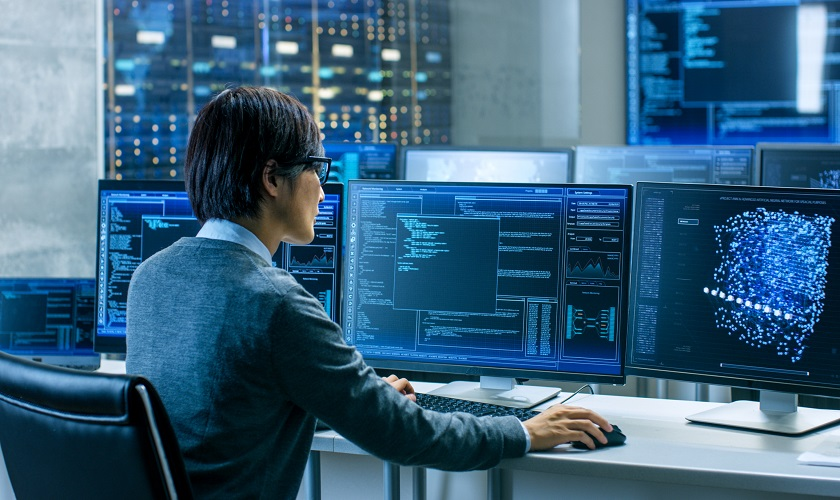
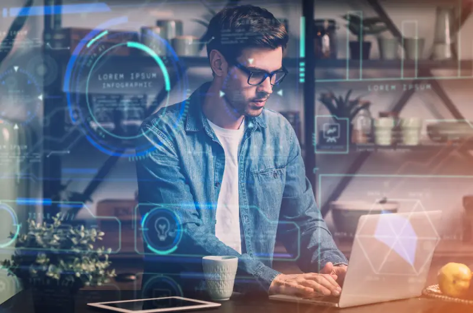

La Evolución de la Computación a lo Largo del Tiempo
La computación es una de las ciencias que más ha transformado a la humanidad en las últimas décadas.
Desde los primeros dispositivos mecánicos como la máquina de Pascal o la máquina analítica de Charles Babbage en el siglo XIX,
hasta los actuales ordenadores cuánticos, el progreso ha sido inmenso.
En sus inicios, las computadoras ocupaban salones enteros, como la famosa ENIAC en 1945,
utilizada principalmente con fines militares. Su costo y tamaño las hacían inaccesibles para la mayoría de la población.
Sin embargo, con la invención del transistor en 1947 y posteriormente del microprocesador en 1971, la miniaturización de los componentes
permitió el nacimiento de las computadoras personales.
Hoy en día, la computación no solo está presente en oficinas y hogares, sino también en dispositivos móviles, electrodomésticos,
automóviles y hasta en la medicina. El avance en inteligencia artificial, almacenamiento en la nube y procesamiento cuántico promete
un futuro en el que las fronteras entre lo humano y lo tecnológico se difuminen aún más.
La evolución de la computación demuestra cómo la innovación constante abre caminos en la ciencia, la industria y la vida cotidiana.
Fuente

Aplicaciones de la Computación en la Vida Diaria
La computación se ha convertido en una herramienta indispensable en el mundo moderno.
Su influencia se extiende a múltiples ámbitos de la vida diaria, facilitando procesos y mejorando la calidad de vida de las personas.
En el ámbito educativo, la computación permite acceder a plataformas virtuales, bibliotecas digitales y herramientas de aprendizaje en línea
, lo que ha revolucionado la forma de enseñar y aprender.
En la salud, el uso de sistemas computarizados ayuda en diagnósticos, análisis de imágenes médicas y gestión de historiales clínicos,
optimizando la atención al paciente.
En el campo laboral, la computación posibilita la automatización de tareas repetitivas, el teletrabajo y la comunicación instantánea entre equipos a nivel mundial. En la vida cotidiana,
aplicaciones móviles y dispositivos inteligentes permiten desde hacer compras en línea hasta controlar la iluminación de una casa con un simple clic.
Es evidente que la computación dejó de ser un lujo para convertirse en una necesidad básica en el mundo actual. Su papel en la sociedad seguirá creciendo a medida que la tecnología avance.
Fuentes:

Retos y Desafíos de la Computación en el Futuro
Aunque la computación ha traído incontables beneficios, también enfrenta importantes desafíos que determinarán su futuro. Uno de ellos es la ciberseguridad, ya que cada vez más datos personales, financieros y gubernamentales circulan en la red, lo que aumenta el riesgo de ataques informáticos.
Otro reto es la brecha digital. A pesar de los avances, aún existen comunidades sin acceso a computadoras o internet, lo que genera desigualdades en educación, trabajo y oportunidades. Reducir esta brecha es fundamental para lograr un desarrollo tecnológico más inclusivo.
Además, la llegada de la inteligencia artificial y la computación cuántica plantea interrogantes éticas y sociales. Por ejemplo: ¿qué trabajos serán reemplazados por máquinas? ¿cómo se protegerán los derechos de los usuarios frente a algoritmos cada vez más poderosos?
La computación del futuro deberá buscar un equilibrio entre el progreso tecnológico y el bienestar humano. Resolver estos desafíos será clave para que la tecnología continúe siendo una herramienta al servicio de la sociedad.
Fuente :
